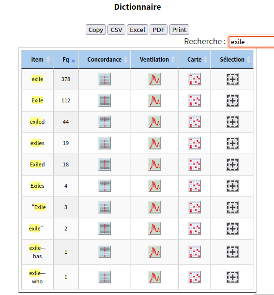
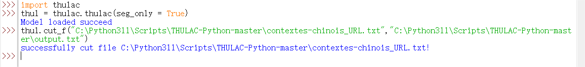
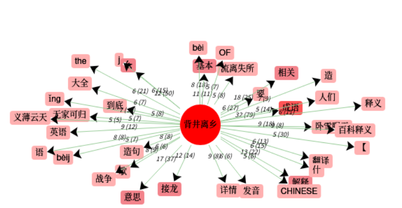
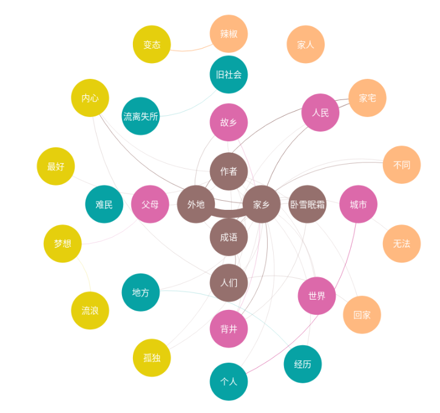

dictionnaire anglais
Le dictionnaire du contexte anglais montre qu'à part des mots vides commes des articles (the, a) ou des prépositions (for, to), le mot anglais "exile" apparaît de manière assez fréquente dans les articles, ce qui garantit un contexte pertinent pour l'analyse suivante sur le mot "exile".
Dans le corpus anglais, les mots les plus représentés autour du terme "exile" montrent, dans une certaine mesure, le sens essentiel du mot "exile" dans le contexte.
contexte du mot anglais "exile"
Lorsque nous observons les mots dans le tableau des contextes, les prépositions au premier rang comme "in" et "into" marquent le changement d'état (d'un endroit à un autre) du mouvement "exile".
À l'exception de ces grammèmes, certains mots dans la liste reflètent les circonstances du mot "exile" : "Reasons" ou "causes" de "exile" sont fréquemment mentionnés dans le corpus, ainsi sont introduits les mots comme "Working" et "life", qui seraient les raisons pour ce mouvement. En plus, le mot "refugees" dans le tableau indique également l'agent principal du mouvement.

graphe du contexte du mot anglais "exile"
Si nous avons besoin d'une perception plus claire sur les contextes du mot "exile", le graphe nous précise que les administrations ("government") et les médias (journalists) jouent aussi un rôle important dans les articles concernant "exile", ce qui est raisonnable car les dépaysements politiques sont souvent provoqués par des raisons administratives et les journalists sont les plus concernés par ce problème.

graphe du contexte par Itrameur
Le mot « dépaysement » est traduit en chinois par l’expression idiomatique « 背井离乡 ». Avant de traiter le corpus du chinois avec l’analyseur linguistique (et bien les outils de génération de nuages), nous nous sommes confrontés à une grande difficulté : puisque les sinogrammes se montrent en continuum, nous avons donc dû recourir à un logiciel de segmentation -- Thulac, recommandé par le professeur en cours, capable de redonner un texte dont les mots chinois sont bien séparés par l’espace.

graphe du contexte par Itrameur
Quant à l’analyse du texte, nous nous sommes initialement servis du logiciel Itrameur en ligne à la suite de la présentation du professeur. Néanmoins, malgré l’input du texte déjà segmenté, comme l’indique l’image ci-jointe, un nombre de mots cooccurents sont mal générés, tels que quelques mots anglais: the, CHINESE, OF et les phonèmes de caractère chinois: bèi, îng, aussi bien que les mots présentant aucun sens: 么，语.

graphe du contexte par Weiciyun
Afin de favoriser le traitement du corpus chinois, nous avons découvert un analyseur plus intelligent et spécialisé – Weiciyun, qui couvre à peu près toutes les fonctions de l’Itrameur et fournit les résultats plus enrichissants.
En observant le graphe des contexte, le logiciel a retenu les mots dont la majorité indiquent le conflit émotionnel entre la vie familiale et individuelle: 父母 - parents, 回家 – retour, 个人 – individu, 孤独 – solitude，梦想 – rêve，流浪 - vagabond， 家人 - famille， 家宅 - maison， 经历 – expérience, ce qui nous donnerait plutôt l’impression que les chinois, obligés de partir en ville et de quitter sa famille par souci de leur condition pécuniaire, seuls dans un lieu tout étranger gagnent leur vie (et de leur famille). Cette histoire se voit assez fréquemment dans l’antiquité, expliquant que ce mot était utilisé depuis longtemps. Par contre, dans la société chinoise contemporaine, c'est plutôt en quête de leur rêve personnelle que les gens ont choisi de quitter leur endroit natal. En outre, certains mots, comme 汉秋宫，卧雪眠霜，permettent de remonter à l’histoire d’origine de l’expression en question, autour d’un vagabond relégué par la cour impériale dans les jours antiques en Chine. On peut alors supposer que dans les contextes susmentionnés, le mot - 背井离乡 s’utilise davantage.